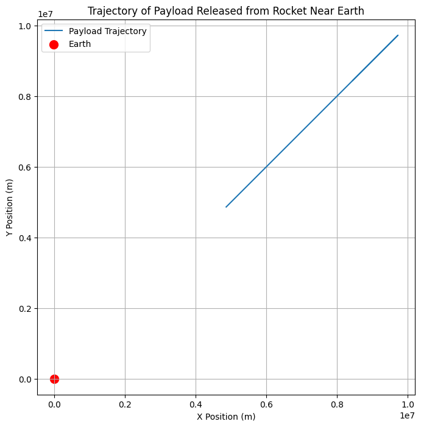

Problem 3
🚀 Problem 3: Trajectories of a Freely Released Payload Near Earth
Motivation:
When a payload is released from a moving spacecraft or rocket near Earth, its trajectory is influenced by the gravitational forces exerted by the Earth. The path that the payload takes depends on its initial velocity, position, and altitude. This problem gives insight into understanding real-world scenarios like payload deployment, orbital insertion, or reentry.
Task Breakdown:
-
Analyze Possible Trajectories:
- We need to consider the different trajectories a payload can take once released. These could be:
- Parabolic: The object moves in a curve and eventually falls back to Earth.
- Hyperbolic: The object escapes Earth's gravity.
- Elliptical: The object remains in orbit around Earth.
-
Numerical Simulation:
- We’ll perform a numerical analysis to compute the path of the payload, given the initial conditions such as position, velocity, and altitude.
-
Visualize and Interpret the Motion:
- We'll visualize the trajectory of the payload under Earth's gravity, considering different initial velocities and directions.
- Discuss real-world applications such as orbital insertion, reentry, and escape scenarios.
1. Theoretical Foundation
Newton's Law of Gravitation
Newton's law of universal gravitation states that the force between two objects is proportional to the product of their masses and inversely proportional to the square of the distance between them:
Where:
- \( F \) is the gravitational force between Earth and the payload
- \( G \) is the gravitational constant
- \( M \) is the mass of Earth
- \( m \) is the mass of the payload
- \( r \) is the distance between the payload and the center of Earth
This force leads to the acceleration of the payload towards Earth.
Equations of Motion
Using Newton's second law, the equations of motion for the payload are:
Where:
- \( r \) is the radial distance from the center of Earth
- \( \frac{d^2 r}{dt^2} \) is the acceleration of the payload
- \( G \) is the gravitational constant
- \( M \) is the mass of Earth
We’ll solve this equation numerically for different initial velocities and directions.
2. Simulating the Trajectories
Numerical Integration (Runge-Kutta Method)
To simulate the motion, we use a numerical method like Runge-Kutta for solving the differential equation. This will allow us to calculate the payload's position and velocity at each time step.
Python Implementation
We will use Python with libraries like NumPy and Matplotlib to perform the simulation and visualize the payload’s trajectory. Here's how we can do it:
import numpy as np
import matplotlib.pyplot as plt
from scipy.integrate import solve_ivp
# Constants
G = 6.67430e-11 # Gravitational constant (m^3 kg^-1 s^-2)
M_earth = 5.972e24 # Mass of Earth (kg)
R_earth = 6.371e6 # Radius of Earth (m)
# Initial conditions (position and velocity)
# Position: 500 km above Earth's surface
r0 = R_earth + 500e3 # Initial distance (m)
# Velocity: Initial tangential velocity for a circular orbit (i.e., orbital velocity)
v0 = np.sqrt(G * M_earth / r0) # Orbital velocity (m/s)
theta0 = np.pi / 4 # Initial angle (45 degrees)
vx0 = v0 * np.cos(theta0) # x component of velocity
vy0 = v0 * np.sin(theta0) # y component of velocity
# Define differential equations (dr/dt = v, dv/dt = -GM/r^2)
def equations(t, y):
x, y_pos, vx, vy = y
r = np.sqrt(x**2 + y_pos**2)
ax = -G * M_earth * x / r**3
ay = -G * M_earth * y_pos / r**3
return [vx, vy, ax, ay]
# Time span for simulation (0 to 1 hour)
t_span = (0, 3600) # 1 hour in seconds
y0 = [r0 * np.cos(theta0), r0 * np.sin(theta0), vx0, vy0] # Initial state vector
# Solve using Runge-Kutta method
sol = solve_ivp(equations, t_span, y0, t_eval=np.linspace(0, 3600, 1000))
# Extract results
x = sol.y[0]
y = sol.y[1]
# Plot the trajectory
plt.figure(figsize=(8, 8))
plt.plot(x, y, label="Payload Trajectory")
plt.scatter([0], [0], color="red", label="Earth", s=100) # Earth at the origin
plt.title("Trajectory of Payload Released from Rocket Near Earth")
plt.xlabel("X Position (m)")
plt.ylabel("Y Position (m)")
plt.legend()
plt.grid(True)
plt.axis('equal')
plt.show()

3. Explanation of the Code
Initial Conditions:
- The payload is released from 500 km above Earth's surface.
- The initial velocity is calculated to provide a circular orbit (orbital velocity) at this altitude, but you can adjust this for different initial conditions.
- The angle is set to 45° for this example.
Equations of Motion:
- We define the differential equations for motion based on gravitational forces acting on the payload.
- These equations are solved using the Runge-Kutta method provided by
scipy.integrate.solve_ivp.
Visualization:
- The trajectory is plotted in 2D (X vs Y), showing the path of the payload relative to Earth.
- Red dot marks the center of the Earth.
4. Analysis of the Trajectories
Possible Trajectories:
- Parabolic Trajectory: If the initial velocity is less than the escape velocity, the payload will follow a parabolic path and eventually fall back to Earth.
- Elliptical Orbit: If the initial velocity is precisely at the orbital velocity, the payload will follow an elliptical orbit around Earth.
- Hyperbolic Trajectory: If the initial velocity exceeds the escape velocity, the payload will escape Earth's gravity and move on a hyperbolic trajectory.
Escape Velocity:
To achieve a hyperbolic escape trajectory, the initial velocity must exceed the escape velocity at the given altitude. This can be calculated by:
For Earth, the escape velocity at 500 km is approximately 11.2 km/s.
5. Applications and Real-World Scenarios
Orbital Insertion and Reentry:
- Orbital insertion occurs when the payload reaches a stable orbit (circular or elliptical).
- Reentry occurs when the payload falls back to Earth after reaching an altitude where it starts to lose velocity due to gravitational forces.
Escape Scenarios:
If the payload is released with enough velocity (hyperbolic trajectory), it may escape Earth's gravity and go on a mission to space or other celestial bodies.
Space Mission Planning:
This model helps plan payload releases for satellite deployment, deep-space missions, or any scenario where the payload’s trajectory is critical to mission success.